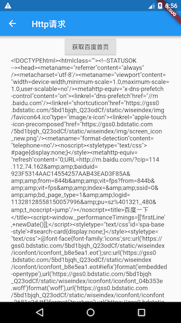
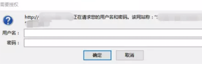

11.2 通过HttpClient发起HTTP请求
Dart IO库中提供了用于发起Http请求的一些类，我们可以直接使用HttpClient来发起请求。使用HttpClient发起请求分为五步：
-
创建一个
HttpClient：HttpClient httpClient = HttpClient(); -
打开Http连接，设置请求头：
HttpClientRequest request = await httpClient.getUrl(uri);这一步可以使用任意Http Method，如
httpClient.post(...)、httpClient.delete(...)等。如果包含Query参数，可以在构建uri时添加，如：Uri uri = Uri(scheme: "https", host: "flutterchina.club", queryParameters: { "xx":"xx", "yy":"dd" });通过
HttpClientRequest可以设置请求header，如：request.headers.add("user-agent", "test");如果是post或put等可以携带请求体方法，可以通过HttpClientRequest对象发送请求体，如：
String payload="..."; request.add(utf8.encode(payload)); //request.addStream(_inputStream); //可以直接添加输入流 -
等待连接服务器：
HttpClientResponse response = await request.close();这一步完成后，请求信息就已经发送给服务器了，返回一个
HttpClientResponse对象，它包含响应头（header）和响应流(响应体的Stream)，接下来就可以通过读取响应流来获取响应内容。 -
读取响应内容：
String responseBody = await response.transform(utf8.decoder).join();我们通过读取响应流来获取服务器返回的数据，在读取时我们可以设置编码格式，这里是utf8。
-
请求结束，关闭
HttpClient：httpClient.close();关闭client后，通过该client发起的所有请求都会终止。
11.2.1 示例
我们实现一个获取百度首页html的例子，示例效果如图11-1所示：

点击“获取百度首页”按钮后，会请求百度首页，请求成功后，我们将返回内容显示出来并在控制台打印响应header，代码如下：
import 'dart:convert';
import 'dart:io';
import 'package:flutter/material.dart';
class HttpTestRoute extends StatefulWidget {
@override
_HttpTestRouteState createState() => _HttpTestRouteState();
}
class _HttpTestRouteState extends State<HttpTestRoute> {
bool _loading = false;
String _text = "";
@override
Widget build(BuildContext context) {
return SingleChildScrollView(
child: Column(
children: <Widget>[
ElevatedButton(
child: Text("获取百度首页"),
onPressed: _loading ? null : request,
),
Container(
width: MediaQuery.of(context).size.width - 50.0,
child: Text(_text.replaceAll(RegExp(r"\s"), "")),
)
],
),
);
}
request() async {
setState(() {
_loading = true;
_text = "正在请求...";
});
try {
//创建一个HttpClient
HttpClient httpClient = HttpClient();
//打开Http连接
HttpClientRequest request =
await httpClient.getUrl(Uri.parse("https://www.baidu.com"));
//使用iPhone的UA
request.headers.add(
"user-agent",
"Mozilla/5.0 (iPhone; CPU iPhone OS 10_3_1 like Mac OS X) AppleWebKit/603.1.30 (KHTML, like Gecko) Version/10.0 Mobile/14E304 Safari/602.1",
);
//等待连接服务器（会将请求信息发送给服务器）
HttpClientResponse response = await request.close();
//读取响应内容
_text = await response.transform(utf8.decoder).join();
//输出响应头
print(response.headers);
//关闭client后，通过该client发起的所有请求都会终止。
httpClient.close();
} catch (e) {
_text = "请求失败：$e";
} finally {
setState(() {
_loading = false;
});
}
}
}
控制台输出：
I/flutter (18545): connection: Keep-Alive
I/flutter (18545): cache-control: no-cache
I/flutter (18545): set-cookie: .... //有多个，省略...
I/flutter (18545): transfer-encoding: chunked
I/flutter (18545): date: Tue, 30 Oct 2018 10:00:52 GMT
I/flutter (18545): content-encoding: gzip
I/flutter (18545): vary: Accept-Encoding
I/flutter (18545): strict-transport-security: max-age=172800
I/flutter (18545): content-type: text/html;charset=utf-8
I/flutter (18545): tracecode: 00525262401065761290103018, 00522983
11.2.2 HttpClient配置
HttpClient有很多属性可以配置，常用的属性列表如下：
| 属性 | 含义 |
|---|---|
| idleTimeout | 对应请求头中的keep-alive字段值，为了避免频繁建立连接，httpClient在请求结束后会保持连接一段时间，超过这个阈值后才会关闭连接。 |
| connectionTimeout | 和服务器建立连接的超时，如果超过这个值则会抛出SocketException异常。 |
| maxConnectionsPerHost | 同一个host，同时允许建立连接的最大数量。 |
| autoUncompress | 对应请求头中的Content-Encoding，如果设置为true，则请求头中Content-Encoding的值为当前HttpClient支持的压缩算法列表，目前只有"gzip" |
| userAgent | 对应请求头中的User-Agent字段。 |
可以发现，有些属性只是为了更方便的设置请求头，对于这些属性，你完全可以通过HttpClientRequest直接设置header，不同的是通过HttpClient设置的对整个httpClient都生效，而通过HttpClientRequest设置的只对当前请求生效。
11.2.3 HTTP请求认证
Http协议的认证（Authentication）机制可以用于保护非公开资源。如果Http服务器开启了认证，那么用户在发起请求时就需要携带用户凭据，如果你在浏览器中访问了启用Basic认证的资源时，浏览就会弹出一个登录框，如图11-2：

我们先看看Basic认证的基本过程：
-
客户端发送http请求给服务器，服务器验证该用户是否已经登录验证过了，如果没有的话， 服务器会返回一个401 Unauthozied给客户端，并且在响应header中添加一个 “WWW-Authenticate” 字段，例如：
WWW-Authenticate: Basic realm="admin"其中"Basic"为认证方式，realm为用户角色的分组，可以在后台添加分组。
-
客户端得到响应码后，将用户名和密码进行base64编码（格式为用户名:密码），设置请求头Authorization，继续访问 :
Authorization: Basic YXXFISDJFISJFGIJIJG服务器验证用户凭据，如果通过就返回资源内容。
注意，Http 的方式除了 Basic 认证之外还有：Digest 认证、Client 认证、Form Based 认证等，目前Flutter 的 HttpClient 只支持 Basic 和 Digest 两种认证方式，这两种认证方式最大的区别是发送用户凭据时，对于用户凭据的内容，前者只是简单的通过 Base64 编码（可逆），而后者会进行哈希运算，相对来说安全一点点，但是为了安全起见，无论是采用Basic认证还是Digest认证，都应该在Https协议下，这样可以防止抓包和中间人攻击。
HttpClient关于Http认证的方法和属性：
-
addCredentials(Uri url, String realm, HttpClientCredentials credentials)该方法用于添加用户凭据,如：
httpClient.addCredentials(_uri, "admin", HttpClientBasicCredentials("username","password"), //Basic认证凭据 );如果是Digest认证，可以创建Digest认证凭据：
HttpClientDigestCredentials("username","password") -
authenticate(Future<bool> f(Uri url, String scheme, String realm))这是一个setter，类型是一个回调，当服务器需要用户凭据且该用户凭据未被添加时，httpClient会调用此回调，在这个回调当中，一般会调用
addCredential()来动态添加用户凭证，例如：httpClient.authenticate=(Uri url, String scheme, String realm) async{ if(url.host=="xx.com" && realm=="admin"){ httpClient.addCredentials(url, "admin", HttpClientBasicCredentials("username","pwd"), ); return true; } return false; };一个建议是，如果所有请求都需要认证，那么应该在HttpClient初始化时就调用
addCredentials()来添加全局凭证，而不是去动态添加。
11.2.4 代理
可以通过findProxy来设置代理策略，例如，我们要将所有请求通过代理服务器（192.168.1.2:8888）发送出去：
client.findProxy = (uri) {
// 如果需要过滤uri，可以手动判断
return "PROXY 192.168.1.2:8888";
};
findProxy 回调返回值是一个遵循浏览器PAC脚本格式的字符串，详情可以查看API文档，如果不需要代理，返回"DIRECT"即可。
在APP开发中，很多时候我们需要抓包来调试，而抓包软件(如charles)就是一个代理，这时我们就可以将请求发送到我们的抓包软件，我们就可以在抓包软件中看到请求的数据了。
有时代理服务器也启用了身份验证，这和http协议的认证是相似的，HttpClient提供了对应的Proxy认证方法和属性：
set authenticateProxy(
Future<bool> f(String host, int port, String scheme, String realm));
void addProxyCredentials(
String host, int port, String realm, HttpClientCredentials credentials);
他们的使用方法和上面“HTTP请求认证”一节中介绍的addCredentials和authenticate 相同，故不再赘述。
11.2.5 证书校验
Https中为了防止通过伪造证书而发起的中间人攻击，客户端应该对自签名或非CA颁发的证书进行校验。HttpClient对证书校验的逻辑如下：
- 如果请求的Https证书是可信CA颁发的，并且访问host包含在证书的domain列表中(或者符合通配规则)并且证书未过期，则验证通过。
- 如果第一步验证失败，但在创建HttpClient时，已经通过 SecurityContext 将证书添加到证书信任链中，那么当服务器返回的证书在信任链中的话，则验证通过。
- 如果1、2验证都失败了，如果用户提供了
badCertificateCallback回调，则会调用它，如果回调返回true，则允许继续链接，如果返回false，则终止链接。
综上所述，我们的证书校验其实就是提供一个badCertificateCallback回调，下面通过一个示例来说明。
示例
假设我们的后台服务使用的是自签名证书，证书格式是PEM格式，我们将证书的内容保存在本地字符串中，那么我们的校验逻辑如下：
String PEM="XXXXX";//可以从文件读取
...
httpClient.badCertificateCallback=(X509Certificate cert, String host, int port){
if(cert.pem==PEM){
return true; //证书一致，则允许发送数据
}
return false;
};
X509Certificate是证书的标准格式，包含了证书除私钥外所有信息，读者可以自行查阅文档。另外，上面的示例没有校验host，是因为只要服务器返回的证书内容和本地的保存一致就已经能证明是我们的服务器了（而不是中间人），host 验证通常是为了防止证书和域名不匹配。
对于自签名的证书，我们也可以将其添加到本地证书信任链中，这样证书验证时就会自动通过，而不会再走到badCertificateCallback回调中：
SecurityContext sc = SecurityContext();
//file为证书路径
sc.setTrustedCertificates(file);
//创建一个HttpClient
HttpClient httpClient = HttpClient(context: sc);
注意，通过setTrustedCertificates()设置的证书格式必须为 PEM 或 PKCS12，如果证书格式为PKCS12，则需将证书密码传入，这样则会在代码中暴露证书密码，所以客户端证书校验不建议使用 PKCS12 格式的证书。
11.2.6 总结
本节介绍了如果使用 Dart:io 库的 HttpClient来发起Http请求，以及相关的请求配置、代理设置以及证书校验等，可以发现直接通过HttpClient发起网络请求还是比较麻烦的，下一节我们将会介绍一下dio网络库，通过它。值得注意的是，HttpClient提供的大所数属性和方法最终会作用在请求的header里，我们完全可以通过手动去设置header来实现，之所以提供这些方法，只是为了方便开发者而已。另外，Http协议是一个非常重要的、使用最多的网络协议，每一个开发者都应该对 http 协议非常熟悉。